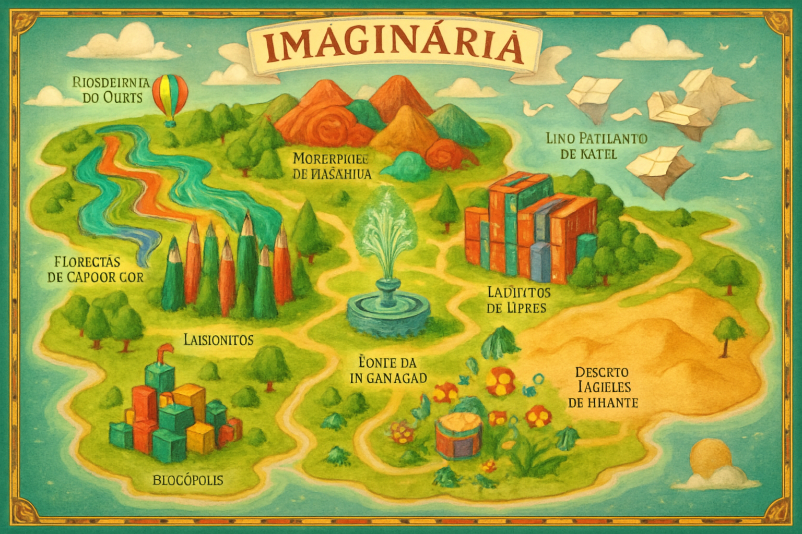

Explore o Mapa de Imaginária
Uma grande ilustração interativa do mundo de Imaginária. Passe o mouse ou clique em diferentes locais para ver uma breve descrição e uma pequena ilustração.
Locais de Imaginária:
-
As Ilhas de Rascunho:
Onde a aventura começa! Ilhas flutuantes feitas de papelão e árvores de régua. Cuidado com os rios de cola grudenta!
-
A Floresta de Lápis de Cor:
Caminhe entre árvores gigantes de lápis de cor sob um dossel de aparas coloridas. O ar aqui cheira a madeira nova e criatividade.
-
As Montanhas de Massinha:
Picos macios e maleáveis onde a diversão pode curar qualquer tristeza. Aqui, criaturas moldadas ganham vida!
-
O Labirinto de Livros:
Corredores intermináveis formados por livros gigantes. Um lugar onde as palavras podem se perder e precisam ser salvas.
-
O Jardim dos Sons Divertidos:
Um lugar onde cada planta toca uma nota musical. Uma sinfonia natural que combate o silêncio da Monotonia.
-
O Deserto de Areia Brilhante:
Uma vasta paisagem de areia de glitter que suga a criatividade. A única cura? Pular em cactos-mola para ter novas ideias!
-
Blocópolis:
Uma metrópole construída com blocos de montar, onde a imaginação é a arquiteta-chefe.
-
A Fonte da Imaginação:
O coração pulsante de Imaginária. Um cristal de pura energia criativa que dá vida a todo o resto.